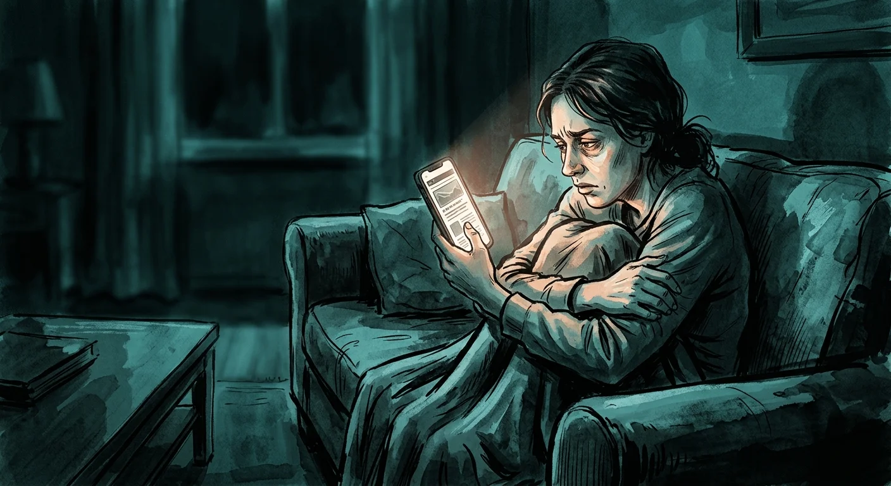
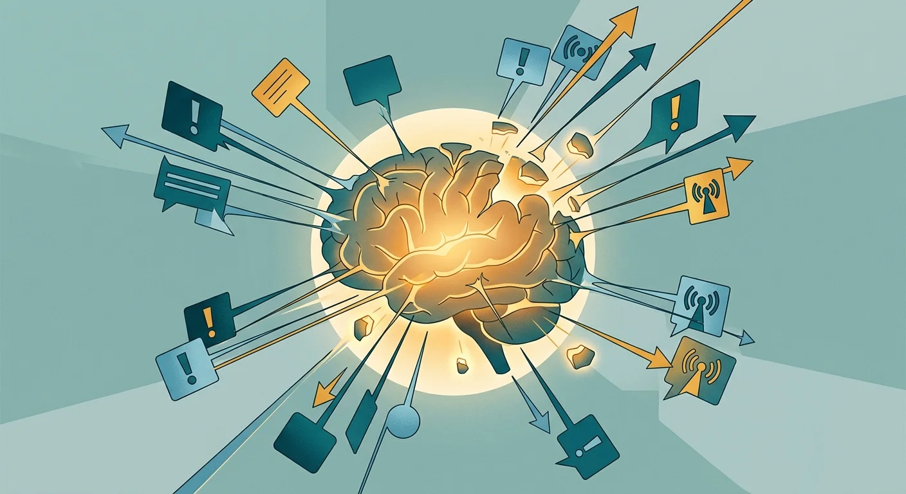
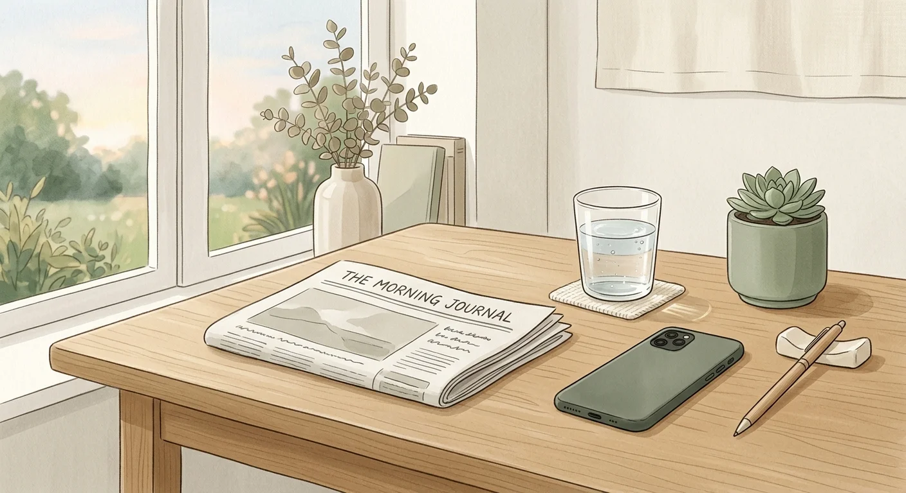

How to Navigate Political Doomscrolling During Election Years
You're not more informed. You're more anxious. Here's what's actually happening — and how to stop.

It's 11 PM. You told yourself you'd check the news for five minutes before bed. That was an hour ago. Your jaw is tight. Your chest feels like it's holding something in. Your eyes are dry from not blinking enough, and your thumb keeps moving even when you consciously try to stop it.
The stories cycle back on themselves — the same outrage, the same takes, a dozen different angles on things that happened eight hours ago. You're not learning anything new. You knew that twenty minutes in. But you're still here.
That tight-chest, can't-stop-scrolling feeling has a name: political doomscrolling. It's the compulsive habit of consuming political news and commentary long past the point of being informed — driven not by curiosity but by anxiety about outcomes you can't control. It's closely related to the broader pattern of doomscrolling, but political content makes it significantly harder to stop, for reasons that are wired deep into how your brain processes threat.
Why Political Content Hits Differently Than Regular Doomscrolling

Your brain has a feature called negativity bias — it processes threatening information faster, weighs it more heavily, and stores it more durably than neutral or positive information. This made evolutionary sense when threats were physical and local. It makes much less sense when the "threats" are geopolitical developments on another continent, delivered at scale by an algorithm optimized for engagement.
Political content weaponizes this bias. It's designed — by the platforms, and increasingly by the content creators themselves — to feel urgent, existential, and personally relevant. And there's a second mechanism layered on top: moral outrage. Neuroscience research shows that moral outrage activates the brain's reward circuitry in a way that's structurally similar to other dopamine-driven loops. You feel a surge of righteous energy when you encounter content that confirms your values are under threat. Then the surge fades. So you scroll to find the next one.
The platforms know this. Pew Research has found that people who get most of their news from social media are less informed about major news topics than those who use traditional outlets — but they spend more time consuming it. You can consume political content for hours and come out knowing less than someone who read a single 10-minute article. The algorithm isn't selecting for accuracy or completeness. It's selecting for outrage.
What It's Doing to Your Brain and Body
Spending an evening in political doomscrolling isn't just frustrating — it's physiologically expensive. Your body doesn't distinguish between a real threat and a perceived one. When you're reading about a political crisis, your sympathetic nervous system activates: cortisol rises, heart rate creeps up, digestion slows. You enter a low-grade fight-or-flight state. This is the same stress response activated by morning phone use and its cortisol hijack, but political content can sustain it for hours.
The American Psychological Association's annual Stress in America survey consistently identifies news consumption as a top stressor for Americans. In multiple years of reporting, over two-thirds of adults cited "the future of the nation" as a significant source of stress — a category heavily fueled by political news consumption.
The longer-term effect is subtler and more damaging: learned helplessness. Psychologists use this term — originally developed from animal behavior research by Martin Seligman — to describe what happens when a creature is repeatedly exposed to stressors it cannot control. Over time, it stops trying to change its situation even when opportunities to do so appear. Political doomscrolling exposes you, repeatedly, to situations that feel catastrophic and beyond your influence. The result, for many people, is a paralysis that looks like apathy but is actually a nervous system response to chronic perceived helplessness.
You care deeply. That's why you keep scrolling. But the scrolling itself is making you feel less capable of doing anything about what you care about.
The "Informed vs. Addicted" Test
There's a version of political news consumption that's genuinely valuable. Staying informed about issues that affect you and your community, understanding policy debates, knowing when and how to take civic action — these matter. The question isn't whether to follow the news. It's whether the way you're doing it is producing anything useful.
After your next political news session, ask yourself two questions:
- Did I learn something I didn't already know?
- Does knowing it change anything I'll actually do today?
If the answers are no and no, you're doomscrolling. Staying genuinely informed produces occasional clarity and sometimes prompts specific action — a vote, a donation, a conversation, a letter. Doomscrolling produces anxiety, exhaustion, and a compulsion to check again in twenty minutes. The outputs are completely different. The inputs look identical.
A useful benchmark: most major political developments that genuinely require your attention will still be there — and better reported — after 24 hours. The breaking-news urgency that drives compulsive checking is mostly artificial. Platforms and cable news operations have financial incentives to make everything feel like it demands immediate attention. It almost never does.
A Practical System to Break the Loop

Willpower alone won't fix this. If it could, you'd have already stopped. The approach that works — and the one aligned with what digital minimalism practitioners consistently recommend — is structural. Change the architecture of how you access political content, not just your intention to consume less of it.
Schedule your news windows
Pick one or two fixed times per day for news: maybe 8 AM with coffee, and 6 PM before dinner. Set a hard timer for 15 minutes. Use a specific news aggregator or a single trusted outlet — not a social media feed, which will use your political interest as an entry point and route you toward outrage content. When the timer ends, close the app. That's it. You're informed.
Curate instead of scroll
There is a profound difference between reading a curated newsletter — where a human editor decided what's worth your attention — and scrolling an algorithmic feed. Newsletters like The Skimm, major newspaper morning briefings, or nonpartisan news digests deliver roughly the same situational awareness as an hour of scrolling in five minutes, without the outrage-optimization layer. Switch the input format and you change the entire experience.
Add friction before opening political apps
The most powerful structural change is inserting a decision point between the impulse and the action. When you instinctively reach for Twitter or your news app while lying in bed at midnight, nothing stops you — the app opens instantly and the algorithm takes over in seconds. That seamless path from impulse to consumption is the core mechanism. Break it.
Sip & Scroll works exactly here. Set up the apps you use for news and political content — Twitter/X, Reddit, news apps — as managed apps. When you go to open them, you're prompted to take a sip of water and snap a quick selfie first. That three-second pause is enough to convert an automatic behavior into a conscious choice. You're not locked out. You're just asked: is this intentional, or is it the anxiety loop?
If it's intentional — if it's your scheduled news window — you take the sip and you're in for 45 minutes of uninterrupted access. If it's 11 PM and you've already done your news window, that pause might be enough to put the phone down instead. That's not restriction. That's architecture.
The Goal Is Not to Stop Caring
The political anxieties that drive doomscrolling are often real. Things are happening in the world that matter. People who care about those things — about policy, about elections, about the direction of their communities — aren't wrong to pay attention.
But caring and compulsive scrolling are not the same thing. In fact, they tend to work against each other. Research on news avoidance and engagement research shows that heavy news consumers — particularly those following emotionally arousing content — are often less likely to take civic action than moderate consumers. The anxiety produces paralysis, not mobilization. You can burn every available unit of civic concern on the scroll and have nothing left for actual participation.
Protecting your attention isn't apathy. It's resource management. The people most capable of responding to what's happening in the world are the ones who haven't burned out their nervous systems reading about it at midnight. You cannot stay informed and functional if you can't stop scrolling, and you cannot protect your scrolling behavior with willpower alone. You need architecture — a sip of water, a 15-minute timer, a decision point that converts impulse into intention. That's where Sip & Scroll fits in: not as a wall between you and the news, but as the pause that lets you choose.
Turn the impulse into a ritual.
Add friction before the scroll. A sip of water, a quick selfie, 45 minutes of intentional access. That's the pause between anxiety and autopilot.
Download Sip & Scroll — Free